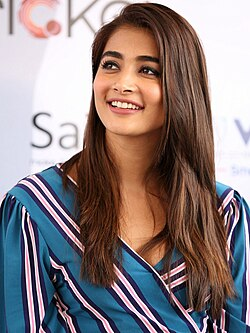
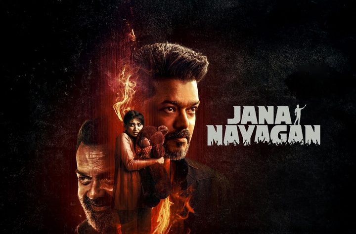

Joseph Vijay

Pooja Hegde
Anirudh
Vinoth

Jana Nayagan is an unreleased Indian Tamil-language political action thriller film 9 directed by H. Vinoth and produced by KVN Productions. The film stars Vijay, Pooja Hegde, Bobby Deol and Mamitha Baiju, alongside Gautham Vasudev Menon, Prakash Raj, Narain and Priyamani. A remake of the 2023 Telugu film Bhagavanth Kesari, it is intended to be the final film appearance of Vijay before his transition into politics, and KVN Productions' first production in Tamil cinema.
Joseph Vijay

Pooja Hegde
Anirudh
Vinoth
| Jana Nayagan | |
|---|---|
| Directed By | H.Vinoth |
| Story By | Anil Ravipudi |
| Produced By | Venkat K. Narayana |
| Directed By | H.Vinoth |
| Cinematography | Sathyan Sooryan |
| Edited By | Pradeep E.Ragav |
| Music By | Anirudh Ravichander |
| Prouction Company | KVN Production |
Dynamic Dealers is a creative editing and post-production team known for producing high-energy fan-made mashups, teaser edits, and cinematic tribute videos inspired by Tamil cinema. Their work often combines advanced 3D animation, VFX (Visual Effects), SFX (Sound Effects), motion graphics, and powerful background music to create a theatrical experience for viewers. Their Jana Nayagan mashup, inspired by Jana Nayagan, gained attention among fans for its stylish transitions, mass-style presentation, and intense audiovisual design. The edit reflects a blend of technical creativity and fan celebration, especially highlighting the larger-than-life screen presence of Vijay and the energetic musical influence of Anirudh Ravichander.